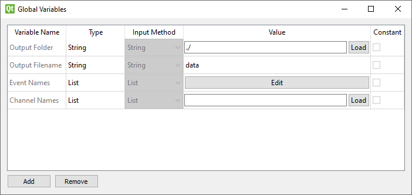
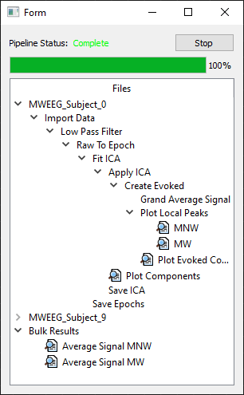

User Guide¶
Quick Start Guide¶
This assumes you’ve followed the installation guides for both the WARIO Editor and the EEG toolkit and have the editor open with the toolkit enabled.
Open the Global Variables window (Ctrl+G) and set values for the default EEG global variables
Open the WARIO preferences (Ctrl+P), check the “Custom” runtime display and use the “load” button to load the “frontend.py” file in the EEG toolkit folder
Create a “Import Data” node under EEG -> input in the right-click node menu
Double click on the node and use the settings window to set the input data
Build your pipeline, save and run
Initializing Global Variables¶
There are several global variables that must be initialized before the pipeline can be run. As the EEG toolkit has been enabled, these will have been automatically added to the global variables window (Ctrl+G). This process must be done each time a pipeline is created using this toolkit.
{kind=link}
Output Folder¶
This is the folder that all generated files will output to. This defaults to the folder that the pipeline is being ran from. It is recommended that this be set to a seperate folder when running the pipeline from within the WARIO editor.
To set the value, click the “Load” button and use the prompt to select a folder. If no folder is selected, it will use the folder currently open in the prompt. The full address of the selected folder is then shown in the text box adjacent to the button.
Alternatively, you can directly edit the contents of the text box. This allows you to set a relative address rather than an absolute one.
Output Filename¶
This is the name given to certain files that dont use the name of the current input file when saving. To set this, simply type what name you want into the textbox.
Event Names¶
This lets you select which event IDs you wish to study, giving each a label. Due to the current limitations of the EEG toolkit, it is necessary to know ahead of time what event IDs you wish to use.
To use, click the “Edit” button to open the event name editor. Numerical event IDs should then be entered into the first column and their respective names in the second. Whenever a value is entered into the bottom-most empty row, a new row is automatically created. Likewise, when the values in the bottom-most filled row are deleted, the row is deleted along with them.
Channel Names¶
This stores the names of each channel, taken from a BDF or numpy file who’s channels match those of the files being analysed by the pipeline. This will most likely be one of the files being analysed. This list of channels is used by the re-referencing node’s settings window. If you do not use this node in your pipeline, this variable can be left blank.
The file can be selected by clicking “load” and then using the prompt to navigate to the relevant file. Once selected, the file’s location is placed inside the associated text box and the channel names are loaded
The EEG Runtime Display¶
The EEG Toolkit comes with a custom runtime display that allows for the user to navigate the output files in a way that preserves the structure of the pipeline. This step only needs to be performed when either using the EEG toolkit for the first time, or when swapping from a different runtime display
To install the runtime display, open the WARIO Editor preferences window (Ctrl+P) and check the “Custom” box under runtime display. Then use the “Load” button to navigate to the frontend.py file in the EEG Toolkit directory. When the pipeline is ran, the runtime display, seen below, will show.
{kind=link}
The top section of the window contains the progress bar and current pipeline status. The tree-based navigator underneath is populated upon runtime completion and contains a nested tree of all nodes, ordered by dependancies. These are seperated into seperate trees for each input file, as well as another tree for bulk analysis plots.
Items in the tree that show this icon  can be double clicked to display the relevant plot. If a node creates multiple plots (such as those for event analysis), the node can be expanded and each plot viewed seperately.
can be double clicked to display the relevant plot. If a node creates multiple plots (such as those for event analysis), the node can be expanded and each plot viewed seperately.
Building A Pipeline¶
The core input node for the EEG pipeline is the “Import Data” node (Inputs -> Import data in the right click node creation menu). Currently, the toolkit supports both BDF and numpy files. For more information on using the Import Data node, see the [Input Nodes](Nodes/input) guide.
With the Initial node created, you can now use the remaining nodes to perform the required data analysis. Please see the node guides for information on their use.
Checkpointing¶
While limited, the EEG toolkit supports a checkpoint system where epoch, evoked and ICA data can be dumped to file. To perform this, connect the “Save Epoch/Evoked/Ica” node to the pipeline where you wish to checkpoint. As nodes are generally ran in the order they were added to the pipeline (assuming all parent nodes have finished), it is generally advisable to add checkpointing nodes early in the pipeline development process.
The .fif files created by these checkpointing nodes can also be imported into the pipeline through the use of the “Load Epoc/Evoked/Ica” nodes in the Input node category. Currently, these nodes only support importing single files so batch analysis is not possible.
Sharing Pipelines¶
The current version of the EEG toolkit relies on absolute file locations for many of the nodes (particularly the import data node). Because of this, care needs to be taken when sharing pipelines.
When loading a pipeline developed on a different computer, you must confirm that all file locations specified in node settings point to valid locations on your computer. Additionally, the output folder global variable must be modified. Failure to do so will likely end up in either the pipeline crashing on run, or the data being saved in an unexpected location on disk.
Current Limitations¶
As this is the first research-focused toolkit to be developed for WARIO, there are still some limitations that have yet to be resolved.
Pausing¶
Due to the nature of the pipeline execution, pausing is not supported. Pipeline runs can be cancelled if necessary by using the runtime window
Data Grouping¶
There are currently no nodes for grouping data, although some may be developed for future EEG related toolkits.